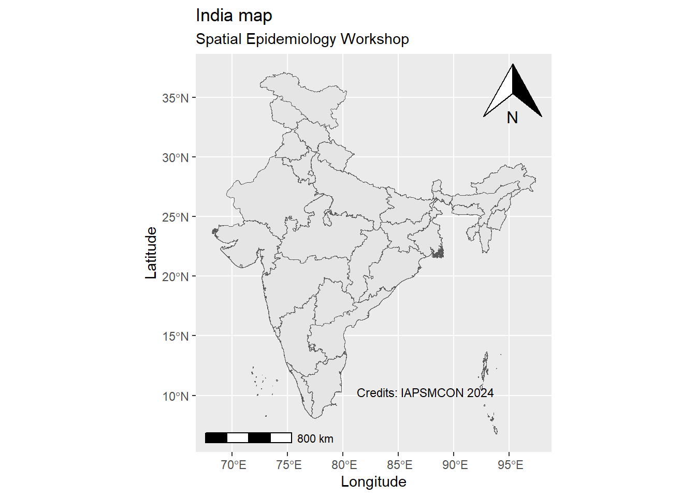
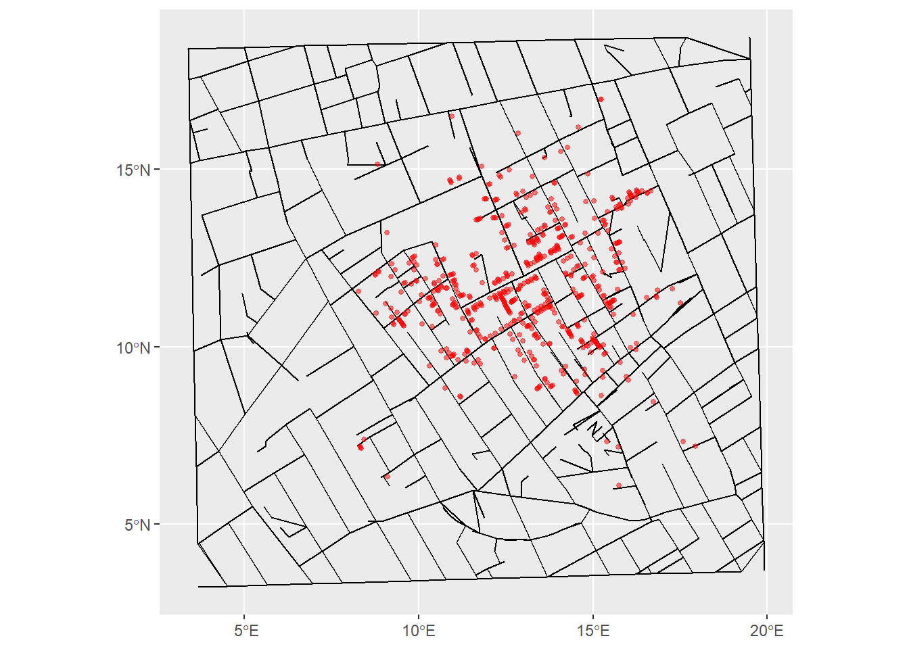
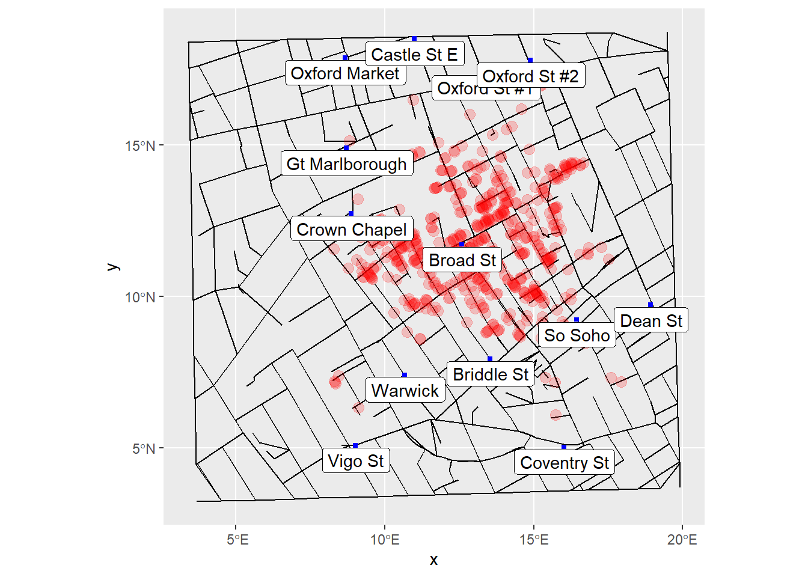

# Setting crs to 4326
india <- india |>
st_transform(crs = 4326)Spatial Data Visualization in Epidemiology
Welcome to the world of Spatial Epidemiology!!
Introduction.
The role of spatial data visualization in understanding distribution and determinants of a disease were classically demonstrated in John Snow’s work in cholera epidemic of Golden Square, London in 1854 and maps have remained the most common applied aspect of Spatial epidemiology till date. Maps enable real time visualizations. However, though the concepts of spatial data visualization has its historical roots in the practice of cartography1, with the evolution of map making computational abilities, the requirement to know the cartography concepts for visualisation of spatial data for general use has decreased to minimal. For eg. we can point a location in google maps and reach a destination without deliberations on cartographic concepts (such as northing, scale, etc). This has led to \(neogeography\)2 and thus crowd-sourced databases due to volunteer contributions.
In professional and academic forums, the concepts of cartography are pre-requisites to meaningful spatial data visualization. Further, the concept of using visualization methods has evolved from just a tool for communication to the concept of visualization as an analysis tool. Visualization of spatial data is used to understand distribution patterns and generate hypothesis as well as for inferential procedures. The underlying principles in Scientific visualization has led to use of visualization methods as complementary to statistical inference procedures in spatial epidemiology. For example, the interpretation of Moran’s I3 is incomplete without accompanying visualization of dataset. The maps as analysis tools have several possible meanings and are thus polysemic in nature.
Expectations from the present session.
It is expected that by end of this session, participants should be able to develop visualizations, understand and communicate epidemiological information, and develop hypothesis based on the visual representations of spatial data sets.
Graphic Variables.
\(Jacques\) \(Bertin\), a french cartographer published a book \(Semiologie\) \(Graphique\), which brought forward concept of graphic variables. These variables highlight methods using which different information can be obtained from the data. The seven graphic variables as mentioned in \(Semiology\) \(of\) \(graphics\) (English version) are as under:-
Location.
The location of a spatial object varies with changing projections. It is important to understand that the transformation of CRS from geographic to projected, from raster to vector should be done with caution. The method of choice should be guided by the research objectives and need to preserve shape or location.
Value.
The value of a variable is related to the darkness/ lightness of a symbol. It is usually used for variables on an interval or ratio scale. Traditionally, higher values are depicted darker.
Color
Color can be considered as most complex graphic variable. It represents varied sensations to different viewers. In addition, human eye is not equally sensitive across the spectrum of colors. Further, cultural affiliations, traditional representations and understandings provide challanges. A golden rule recommended is to first use color-blind friendly palettes. In the domain of Public Health, it is important to consider the color and its depiction during visualization to avoid ambiguous communication. For example: Color choice in vaccination coverage visualization as compared to color choice in obesity.
Size.
In proportional symbol maps, the size of a symbol represents the difference in quantum of observations. The underlying type of data, classification adopted, transformations, and outlier management among others should be explored during visualizations.
Shape.
Similar to size, choice of shape of the symbol can provide clarity or increase confusion, if not considered carefully. Different shapes can be provided to distinguish different types of variables. The same can be considered to distinguish sub-types of a variable. For example, dotted lines and solid lines can be used to distinguish roads from rivers but can also be used to distinguish main roads from side-roads. Understanding of datasets and variables help in deciding correct shapes for representation of data.
Space.
The arrangement of symbols can also be used to represent differences. For example: In a dot map representing dengue occurrence data, space between the dots represent disease clustering, if any. Again, the interpretation of a variable needs careful consideration, as the case occurrence may be higher just because of underlying population figures and not otherwise.
Orientation.
Understanding the orientation of a pattern may provide critical insights into disease epidemiology. For eg. occurrence of a disease along with the course of a river may indicate risk factors associated with disease.
Map components.
Map.
The vector or raster map is central to map visualizations.
Title.
A short and clear title must be provided. In addition, subtitles can be added, if required.
Distance and Scale.
There are two options for displaying information related to distance and scale in a map.
1. Display of a scale bar.
2. Use of x and y axes of the display as labeling axes.
Direction.
Similar to symbolism of scale, direction can be displayed as a symbol or can be implicit in the labeled axes. Conventionally, true North is provided as a symbol in maps.
Legend.
Not all maps require a legend. When present, due consideration to Graphic variables should be given.
Credits.
The data sources, source of geospatial files should be provided.
Understanding the process of Map creation.
The first step in any map making should be based on careful understanding of Co-ordinate Reference Systems. For beginners, it is recommended that all map making and spatial manipulations should be undertaken using ESPG 4326.
Now, lets first create a map of India as per component of maps learned so far.
Creating a Base map.
india |>
ggplot() +
geom_sf()Adding Title/ sub-title.
india |> ggplot()+
geom_sf()+
labs(title = "India map",
subtitle = "Spatial Epidemiology Workshop IAPSMCON 2024")Describing Distance and Scale.
india |> ggplot()+
geom_sf()+
labs(title = "India map",
subtitle = "Spatial Epidemiology Workshop IAPSMCON 2024")+
ggspatial::annotation_scale(location = "bl") #bl/ br/ tr/ tlDirection symbols.
india |> ggplot()+
geom_sf()+
labs(title = "India map",
subtitle = "Spatial Epidemiology Workshop IAPSMCON 2024")+
ggspatial::annotation_scale(location = "bl")+
ggspatial::annotation_north_arrow(location = "br")Adding axis labels
india |> ggplot()+
geom_sf()+
labs(title = "India map",
subtitle = "Spatial Epidemiology Workshop IAPSMCON 2024")+
ggspatial::annotation_scale(location = "bl")+
ggspatial::annotation_north_arrow(location = "tr")+
xlab("Longitude")+
ylab("Latitude")Acknowledging Credits.
india |> ggplot()+
geom_sf()+
labs(title = "India map",
subtitle = "Spatial Epidemiology Workshop")+
ggspatial::annotation_scale(location = "bl")+
ggspatial::annotation_north_arrow(location = "tr")+
xlab("Longitude")+
ylab("Latitude")+
geom_text(aes(x = 87.5,
y = 10.3,
label = "Credits: IAPSMCON 2024"),
color = "black",
check_overlap = T,
size = 3)Scale on map varies by more than 10%, scale bar may be inaccurate
Adding labels and legends.
Addition of labels and legends is optional in map making. The following code can be used to add labels to the map
#adding abbreviations
india$abbr <- c("LA","AP","AR", "AS","BR", "CH","CT", "DL",
"GA", "GJ","HR", "HP","JH", "KA","KL", "MP",
"MH","MN","ML", "MZ","NL", "OR","PY", "PB",
"RJ", "SK","TN", "TR","UP", "UT","WB", "TG",
"JK", "LD","AN", "DDDN")## labeling abbreviations
india |> ggplot()+
geom_sf()+
labs(title = "India map",
subtitle = "Spatial Epidemiology Workshop IAPSMCON 2024")+
ggspatial::annotation_scale(location = "bl")+
ggspatial::annotation_north_arrow(location = "tr")+
xlab("Longitude")+
ylab("Latitude")+
geom_text(aes(x = 87.5, y = 10.3, label = "Credits: IAPSMCON 2024"),
color = "black", check_overlap = T, size = 2)+
geom_sf_label(aes(label = abbr))Visualisation of point data.
Kindly note: For the purpose of clarity on a particular aspect of the map, we will avoid placing all components of a map across the session. This is important to understand that when communicating maps/ figures, all components should be present.
Dot Maps.
The simplest method to visualize disease occurrence patterns is creation of dot maps. They help us understand spatial dependencies in disease occurrence. The spatial clustering of a disease is suggestive of factors present/ absent in locations with high disease occurrence as compared to locations with low disease occurrence. Thus, point maps provides visual tool for providing estimates of Spatial Clustering. Important limitation of these dot maps is the inability to visualize independent events as the number of observations increase or multiple events are observed at the same location. To overcome the same methods such as smoothing, rasterisation and dot density maps is recommended.
Illustrative Example: John Snow maps
Let us create a dot map of John Snow data. To do the same, we need to convert data.frame into an sf object using the st_as_af() function.
snow_deaths_sf <- snow_deaths |>
st_as_sf(coords = c('x', 'y'),
crs = 4326)
snow_deaths_sf |>
ggplot() +
geom_sf() Now, we can add additional layers such as the water pumps and the streets of Soho, London.
snow_streets_sf <- snow_streets |>
st_as_sf(coords = c('x', 'y'), crs = 4326) |>
group_by(street) |>
summarize(n = mean(n)) |>
st_cast('LINESTRING')
snow_streets_sf |>
ggplot() +
geom_sf() Let us add the streets of Soho, London as a new layer in our previously created deaths map.
ggplot() +
geom_sf(data = snow_streets_sf) +
geom_sf(data = snow_deaths_sf,
color = 'red',
alpha = 0.5,
size = 1)
We can now add a new layer of water pumps on the above map.
snow_pumps_sf <- snow_pumps |>
st_as_sf(coords = c('x', 'y'),
crs = 4326)
ggplot() +
geom_sf(data = snow_streets_sf) +
geom_sf(data = snow_deaths_sf, color = 'red', alpha = 0.2, size = 3) +
geom_sf(data = snow_pumps_sf , shape = 22, size = 1, fill = 'blue', color = 'blue') +
geom_sf_label(data = snow_pumps_sf,
aes(label = label),
nudge_x = 0.025,
nudge_y = -0.5)Warning in st_point_on_surface.sfc(sf::st_zm(x)): st_point_on_surface may not
give correct results for longitude/latitude data
Visualisation of aggregate data.
Choropleth Maps.
The term “choropleth” is derived from Greek words \(Khoros\) meaning “place” and \(plethein\) meaning “full”. In choropleth maps, aggregated value for a given area forms the basis of visual representation. The three major challenges in interpretation of choropleth maps arise from large area polygons, Modified Unit Area Problem, and presence of skewed data. Deliberation on these issues, creation of cartograms, data transformation methods such Box-Cox transformations and multi-level analysis are recommended to overcome these limitations.
Example: COVID 19 cases
Lets summarise state wise total covid 19 cases and merge it with india map to plot a choropleth map as demonstration.
df <- covid |>
group_by(state) |>
summarise(cases = sum(cases))
india <- left_join(india, df,
by = c("abbr" = "state"))
india |>
ggplot()+
geom_sf(aes(fill = cases)) +
scale_fill_gradient(low = "white", high = "red") +
labs(fill = "COVID-19 cases",
caption = "For demonstration only",
title = "India COVID-19 cases (Subset data)",
subtitle = "For demonstration only")Think!! Why such maps are not good visualizations?
Visualization using Web based maps.
Many a times it becomes difficult to get a shape file of the stud area. Various sources of shape files is available online (eg. DataMeet, SEDAC, HGL, DIVA-GIS, Bhuvan, Survey of India, etc.). Leaflet package helps us to use web maps from open sources such as Open Street Map, ESRI maps, cartoDB, etc.